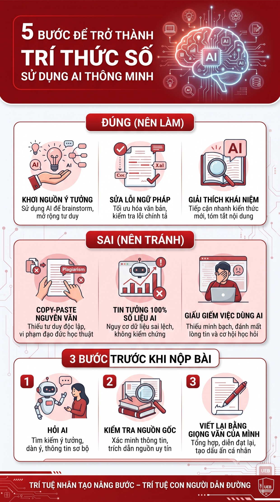

An toàn & liêm chính học thuật trong môi trường số
Nhiệm vụ: Sử dụng AI có trách nhiệm trong học tập và nghiên cứu (mục 6.4)
Mục tiêu
Xây dựng bộ nguyên tắc cá nhân về sử dụng AI có trách nhiệm, an toàn và tuân thủ liêm chính học thuật — dựa trên việc nghiên cứu chính sách của nhà trường, phân tích các vấn đề đạo đức và trải nghiệm thực tế khi dùng AI hỗ trợ học tập.
Chính sách sử dụng AI tại UEB
Trường ĐH Kinh tế - ĐHQGHN khuyến khích ứng dụng AI để nâng cao hiệu quả học tập, nhưng đặt ra ranh giới nghiêm ngặt về liêm chính học thuật:
Công cụ hỗ trợ, không thay thế: AI chỉ là phương tiện gợi ý ý tưởng, cấu trúc; sinh viên chịu trách nhiệm cuối cùng về toàn bộ nội dung.
Yêu cầu minh bạch: bắt buộc khai báo nếu dùng AI trong tiểu luận, NCKH hoặc khóa luận tốt nghiệp.
Nghiêm cấm đạo văn do AI: copy nguyên văn kết quả AI mà không xử lý, kiểm chứng, trích dẫn bị coi là vi phạm nghiêm trọng, tương đương gian lận.
So sánh — VinUniversity. Phân loại rõ 3 mức được dùng AI: Mức 1 – không được dùng; Mức 2 – dùng để sửa lỗi, gợi ý; Mức 3 – dùng tự do nhưng phải trích dẫn. Cách tiếp cận này định hướng hành vi cụ thể hơn.
Quan điểm cá nhân. UEB tập trung vào kết quả cuối cùng & sự giải trình qua công cụ quét đạo văn. Để tối ưu, trường có thể phát triển thêm cẩm nang viết prompt chuẩn mực cho từng chuyên ngành để sinh viên không vi phạm vô ý.
Nhật ký thực hiện nhiệm vụ với AI
Nhiệm vụ lựa chọn
Chuẩn bị đề cương tổng quan & tài liệu tham khảo cho nghiên cứu "Tác động của AI đến hành vi người tiêu dùng trong TMĐT tại Việt Nam".
1 Mức độ 1 — Thu thập ý tưởng & cấu trúc
Prompt đã dùng
"Tôi là sinh viên ngành Kinh tế Quốc tế. Hãy đóng vai một chuyên gia nghiên cứu thị trường, gợi ý cho tôi khung cấu trúc chuẩn gồm 3 chương chính cho đề tài '…'. Bổ sung 3 từ khóa tiếng Anh quan trọng để tìm tài liệu học thuật."
Đầu ra AI (tóm tắt)
Cấu trúc 3 chương (Cơ sở lý luận → Thực trạng ứng dụng AI trong TMĐT tại VN → Giải pháp & hàm ý chính sách) + từ khóa: AI in E-commerce, Consumer Behavior, Vietnam E-commerce market.
Đánh giá & chỉnh sửa. Cấu trúc AI đưa ra logic nhưng còn chung chung; tôi giữ khung 3 chương và bổ sung vào Chương 2 phần phân tích sâu về hành vi Gen Z Việt Nam với thuật toán gợi ý của các tập đoàn TMĐT xuyên biên giới.
2 Mức độ 2 — Tìm kiếm & tóm tắt tài liệu
Prompt đã dùng
"Tóm tắt các giả thuyết chính của mô hình Chấp nhận công nghệ (TAM) khi áp dụng vào việc người tiêu dùng chấp nhận công nghệ AI."
Đầu ra AI
Giải thích hai yếu tố cốt lõi: cảm nhận về sự hữu ích và cảm nhận về sự dễ sử dụng.
Chỉnh sửa & tích hợp. AI cung cấp lý thuyết đúng, nhưng tôi tự tìm các bài báo khoa học thực tế trên Google Scholar để chứng minh, không lấy trực tiếp lời văn của AI vào bài.
Phân tích các vấn đề đạo đức
✓ Hỗ trợ hợp lý. Dùng AI để giải thích khái niệm kinh tế phức tạp, tìm lỗi chính tả, gợi ý cách diễn đạt câu văn mượt mà hơn.
✗ Gian lận học thuật. Nhập nguyên văn đề tiểu luận vào AI, copy toàn bộ kết quả và nộp mà không đọc lại hay tư duy — triệt tiêu hoàn toàn khả năng tư duy phản biện.
Quyền sở hữu trí tuệ & trích dẫn. AI trả kết quả nhưng thường không ghi rõ nguồn gốc tác giả → nguy cơ vi phạm bản quyền gián tiếp; ngoài ra AI đôi khi tự "bịa" ra số liệu hoặc tên tác giả không có thật.
Tác động đến phát triển kỹ năng. Lạm dụng AI quá sớm làm thui chột kỹ năng đọc hiểu tài liệu dài, tổng hợp thông tin và khả năng chịu áp lực; giao hoàn toàn cho AI khiến sinh viên thụ động, mất năng lực cạnh tranh cốt lõi.
Bộ nguyên tắc sử dụng AI có trách nhiệm
Khởi đầu
Tự suy nghĩ, lập dàn ý sơ bộ và tìm tài liệu chính thống trước khi mở AI. AI là trợ lý, bản thân là thuyền trưởng.
Kiểm chứng
Không thừa nhận bất kỳ số liệu, định lý hay sự kiện nào do AI đưa ra khi chưa đối chiếu với nguồn uy tín.
Minh bạch
Chủ động khai báo ở phụ lục hoặc lời mở đầu về phạm vi và công cụ AI đã sử dụng.
Bảo mật
Không tải lên AI công cộng dữ liệu nội bộ chưa công bố, thông tin cá nhân hay tài liệu mật.
Phát triển
Chỉ dùng AI để hiểu sâu bản chất, không dùng AI làm thay bài tập nhằm đối phó lấy điểm.
Infographic minh họa
Infographic

"5 bước để trở thành trí thức số sử dụng AI thông minh" — tông màu đỏ & trắng của UEB
✓ Nên làm. Khơi nguồn ý tưởng · Sửa lỗi ngữ pháp · Giải thích khái niệm.
✗ Nên tránh. Copy-paste nguyên văn · Tin 100% số liệu AI · Giấu giếm việc dùng AI.
3 bước trước khi nộp bài
Bước 1: Hỏi AI.
Bước 2: Kiểm tra nguồn gốc thông tin.
Bước 3: Viết lại bằng giọng văn của mình.
Slogan
"Trí tuệ nhân tạo nâng bước – Trí tuệ con người dẫn đường."
Liêm chính học thuậtMinh bạch · Kiểm chứng5 nguyên tắc